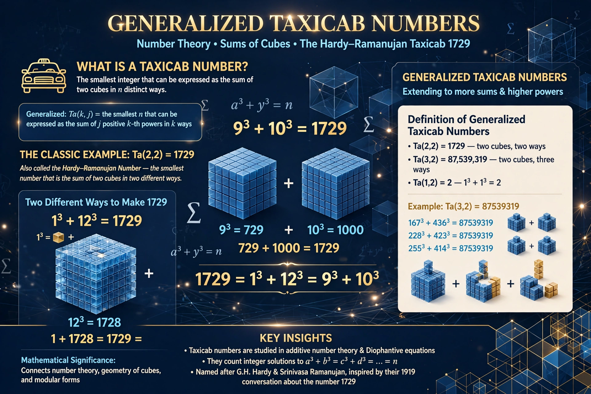

In mathematics, the generalized taxicab number Taxicab(k, j, n) is the smallest number which can be expressed as the sum of j n-th powers in k different ways.

Generalized taxicab numberThe ordinary taxicab numbers are Taxicab(k, 2, 3): sums of two positive cubes in k ways. The most famous is 1729, the Hardy–Ramanujan number — the smallest number expressible as a sum of two positive cubes in two distinct ways: 1³ + 12³ = 9³ + 10³. Euler found parametric families for sums of fourth powers.
For squares, Taxicab(2, 2, 2) = 50 = 1² + 7² = 5² + 5², and Taxicab(3, 2, 2) = 325. For cubes with three terms and higher powers, many values are known only as upper bounds found by computer search, because proofs of minimality are difficult. The concept generalises Euler's sum of powers problem; no example of a single fifth power equal to a sum of fewer than five fifth powers other than known counterexamples to Euler's conjecture has been found.
If Taxicab(k, j, n) exists, it is finite for suitable parameters, and scaling constructions produce larger examples from smaller ones. The search for Taxicab(6, 2, 3) and related numbers has been a classic computational number theory problem.